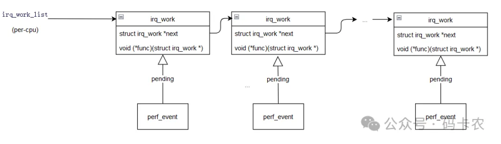
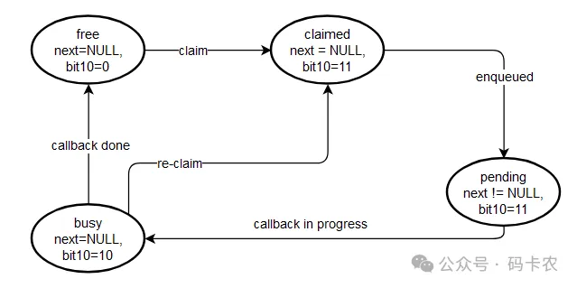

irq_work 在实际工程应用的例子是，在手机出现卡屏卡死状态时，可以使用组合按键触发 irq_work 来 dump 系统信息，而避免使用进程调度，因为此时系统可能资源匮乏、锁竞争让执行 dump 系统信息的进程处于 D 状态无法正常调度工作，导致操作失效，失去分析现场的机会。
本文是对 Linux 邮件列表中 ”[PATCH -tip -v6] irq_work: generic hard-irq context callbacks”主题的分析总结。2010 年 Peter Zijlstra 提交了 irq work 首版内核特性，从 perf event 中提取出通用的 irq work 机制。这个 patch 涉及到了多种 CPU 架构，本文主要以 X86 和 Arm 架构进行详细描述。
About The Author
Peter Zijlstra 是 Linux 内核开发领域内一位杰出的内核开发者和维护者，以其在 CPU 调度领域的创新而闻名。他设计并提出了一种新型 CPU 调度器——Earliest Eligible Virtual Deadline First（EEVDF），这是一种先进的基于虚拟运行时间的调度策略，专门针对提升任务响应性和吞吐量而设计，尤其适用于对延迟敏感的任务处理场景。此外，Zijlstra 在组调度领域也颇有建树，这一特性使得 Linux 内核调度器能够更有效地管理相关任务的分组，以优化整体调度性能。在实时调度领域，Zijlstra 的工作不仅推动了实时调度算法的改进，还显著提升了系统性能。他对 Linux 内核的内存管理机制也进行了深入的优化和改进，极大地提高了系统的稳定性和效率。值得一提的是，Zijlstra 提供了一种创新机制，允许代码在 IRQ（中断请求）上下文中执行，这对于需要与系统其他部分交互的 NMI（非屏蔽中断）处理至关重要，为 Linux 内核的中断处理带来了新的可能。总的来说，Peter Zijlstra 的贡献对 Linux 内核的发展有着深远的影响。
Patch Archives
| 档案项 | 说明 |
|---|---|
| Subject | irq_work: generic hard-irq context callbacks |
| Author | Peter Zijlstra a.p.zijlstra@chello.nl |
| 合入内核版本 | v2.6.37-rc1 |
| 合入时间 | Thu Oct 14 14:01:34 2010 |
邮件主题
1 | [PATCH -tip -v6] irq_work: generic hard-irq context callbacks |
irq_work 提供了一种机制，允许在中断（IRQ）上下文中运行代码。这对于需要与系统其余部分交互的 NMI（非屏蔽中断）代码非常有用——比如唤醒一个任务来清空缓冲区。性能监控（Perf）目前就有这样一个机制，因此提取出来并作为一个通用特性提供，独立于性能监控，以便其他人也可以受益。在可能的情况下，通过自 IPIs（自我处理器间中断）生成中断上下文回调，或者在像 powerpc 这样的架构上，设置递减器（内置的定时器设施）立即生成一个中断。没有类似机制的架构可以通过定时器（timer tick）进行回调。这些架构可以在 IRQ 处理程序的尾部调用 irq_work_run()来处理已经入队的 work，以避免在处理工作中产生不必要的延迟。这个补丁仅在 x86 平台上进行了测试。
注：irq_work 设计的初衷就是将一些实时性比较高的工作放到中断上下文执行，在中断上下文实现像工作队列 work 一样执行。irq_work 执行的内容相对比较简单，它会将耗时任务通过工作队列推迟执行。
修改文件
1 | arch/alpha/Kconfig | 1 |
基本数据结构

- irq_work
定义在 include/linux/irq_work.h 文件，irq_work 结构体是 Linux 内核中用于在中断上下文中执行回调函数的机制。irq_work_list 是一个 per cpu 链表，连接了当前 CPU 所有的 irq_work。irq_work 的 next 成员指向下一个 irq_work，它的最低两位被用来标记当前 irq_work 的状态（free/claimed/pending/busy）
- perf_event
在 include/linux/perf_event.h 中定义，perf_event 是 Linux 性能计数框架的基础，它使得用户空间能够灵活地创建和管理性能监控事件，以收集系统和应用程序的性能数据。通过操作这个结构体，用户空间可以获取关于 CPU 周期、指令缓存命中、分支预测错误等性能相关的统计信息。perf_event 与 irq_work 的关联主要体现在性能事件（perf_event）的溢出处理和工作队列的调度上。如：当一个性能事件（perf_event）发生溢出时，内核需要执行相应的处理逻辑。这通常涉及到唤醒等待这些事件的应用，以便它可以处理这些数据。在内核中，perf_event 结构体中有一个 pending_irq 成员，它是一个 irq_work 结构体，用于处理性能事件的溢出工作。
基本接口
| 接口名称 | 含义 |
|---|---|
| bool irq_work_queue(struct irq_work *entry) | 将 irq_work 实例 entry 入队，成功返回 true，如果 entry 已经被入队则失败，当 callback 回调仍在处理过程中，也可以入队 |
| void irq_work_run(void) | 运行当前 CPU 链表的 irq_work 项，要求在硬件中断上下文运行，且保持 local irq 关闭，以避免中断嵌套 |
| void irq_work_sync(struct irq_work *entry) | 同步对 irq_work 结构体实例 entry 的访问，确保该实例当前不被使用 |
irq_work 初始化
声明了一个 irq_work 链表，它是一个 PER CPU 结构，irq_work 入队后，将链接到此链表
1 | +static DEFINE_PER_CPU(struct irq_work *, irq_work_list); |
初始化一个 irq_work 需要指定它的回调 func，且将其next指针赋值为NULL
1 | +static inline void init_irq_work(struct irq_work *entry, void (*func)(struct irq_work *)) |
本 patch 中初始化一个 irq_work 的例子是 perf_event_alloc，它通过 init_irq_work 初始化一个 irq_work，这个 irq_work的回调perf_pending_event将唤醒等待 perf event 的进程
1 | static struct perf_event * |
irq_work 的工作状态

irq_work 主要有如下几种工作状态：
| 工作状态 | 说明 |
|---|---|
| free | 空闲状态，next 指针为 NULL，最低两位为 0，可转向 claimed 状态 |
| claimed | 声明状态，next 指针为 NULL，最低两位为 3，可转向 pending 状态 |
| pending | 待处理状态，next 指针不为 NULL，最低两位为 3，可转向 busy 状态 |
| busy | 忙状态，next 指针不为 NULL，最低两位为 2，可转向 free/claimed 状态 |
1 | +/* kernel/irq_work.c */ |
irq_work 在清空 claimed 标记后，可以重新 claimed，入队；irq_work 处理完毕后，会重置为 free 状态
irq_work claim
irq_work claim 是指将 irq_work 标记为正在使用，以确保一次只有一个处理器或线程可以访问，防止并发修改。
claimed 通常用在并发编程的上下文中，特别是在多线程或多处理器环境中处理共享资源时。此处对 irq_work 执行 claim 指的是标记一个资源当前正在被特定线程或处理器使用。这样可以阻止其他线程或处理器同时访问。通过执行 irq_work_claim，线程或处理器可获得对该 irq_work 的独占访问。
(1) 如果 irq_work 实例 entry 已经被标记了 IRQ_WORK_PENDING，表示已经被 claimed；
(2) 对 irq_work 实例的 next 指针低两位赋值为 IRQ_WORK_FLAGS，表示转向 claimed 状态；
(3) 通过 while 循环中 cmpxchg 判断来验证对 irq_work 实例 entry 操作期间是否有发生并发修改访问，保证原子操作
1 | +static bool irq_work_claim(struct irq_work *entry) |
irq_work 入队
将 irq_work 入队到 irq_work_list 链表，等待处理：
(1) 判断 irq_work 实例 entry 是否已经入队，如果已经入队则返回 false;
(2) 将 irq_work 实例 entry 入队，成功返回 true
1 | +bool irq_work_queue(struct irq_work *entry) |
__irq_work_queue 具体实现 irq_work 的入队操作：
(1) irq_work_list 是一个 per-cpu 变量，是当前 cpu 上 irq_work 的链表头；
(2) 将 irq_work 实例 entry 入队到这个 wirq_work_list。next_flags 用于设置 irq_work 的状态，这里将 next 指针的低两位与 IRQ_WORK_FLAGS（0b11）执行了或操作，根据前面 irq_work 工作状态一节的分析，next 非 NULL, 且 bit10=0b11，则表示执行了入队操作，entry 实例转换为 peding 状态，这里通过使用 cmpxchg 函数原子地更新 head。如果更新成功（即返回值等于 next），则退出循环。
cmpxchg 操作本身是原子的，它会检查 head 的当前值是否与 next 相等。如果不相等，cmpxchg 操作会失败，并返回 head 的当前值，这表明在执行 cmpxchg 期间 head 已经被其他线程或处理器修改，说明有其它线程或处理器执行了 irq_work 入队操作，需要重新入队。
(3) irq_work_next 函数用于检查 entry 项是否是队列中的第一个元素。如果是，这意味着在加入 entry 之前队列是空的，因此需要触发一个自中断（self-interrupt）来开始处理队列中的工作项。arch_irq_work_raise 函数是一个架构相关的函数，用于触发自中断，它会通知当前 CPU 开始处理 irq_work 队列。
为什么要在队列为空时触发自中断？因为如果没有工作项在队列中，当前 CPU 可能不会主动去检查和处理 irq_work 队列。通过触发自中断，可以确保即使在队列刚刚从空变为非空时，CPU 也能立即响应并开始处理队列中的工作项。
1 | +static void __irq_work_queue(struct irq_work *entry) |
当前 patch 中，irq_work 入队的发生时机位于 PMU 中断中，如果处于 NMI 中断上下文，则会通过 irq_work_queue 将一些操作通过 irq_work 执行；这样可以避免 NMI 中处理一些复杂操作。
PMU 是一个硬件组件，用于监控、跟踪、计数系统内部的一些底层硬件事件，包括与 CPU 有关的事件（如执行指令数、捕获异常数、时钟周期数等），与 cache 有关的事件（数据/指令/L1/L2 cache 访问次数，cache miss 次数等）以及与 TLB 有关的事件等。对于 x86 架构，PMU（Performance Monitoring Unit）中断被配置为 NMI（Non-Maskable Interrupt）来处理。这种配置确保了性能监控事件的高优先级处理，即使在其他中断被禁用的情况下也能及时响应。在 arch/x86/events/core.c::perf_events_lapic_init()函数中，PMI（Performance Monitoring Interrupt）被配置为通过 NMI 向操作系统发送通知。这种配置允许操作系统在性能计数器溢出时，通过调用 perf_event_overflow 函数来处理数据采样和事件通知，而这个函数中的 nmi 参数用于指示性能事件是否是在 NMI 上下文中触发的。
NMI 中断不能做太复杂的操作，因为 NMI 处理程序需要快速执行以避免影响系统的稳定性。NMI 处理程序需要快速返回以避免影响系统的实时性。通过将一些可以延迟处理的任务放入 irq_work_queue，NMI 处理程序可以快速返回，而将复杂的处理逻辑推迟到后续执行，这样可以保证系统的响应性。
1 | static int x86_pmu_handle_irq(struct pt_regs *regs) |
irq_work 运行
irq_work_run 用于执行当前 CPU 链表的 irq_work 项，它会遍历当前 cpu 的 irq_work 链表，执行所有 irq_work 的 func 回调。这里需要注意的是 irq_work_run 属于硬件上下文，需要将 local irq 关掉，以避免发生中断嵌套
(1) irq_work_list 是一个 per-cpu 变量，是当前 cpu 上 irq_work 的链表头；
(2) 用于原子判断链表是否空；
(3) 如果链表不为空，则会循环遍历每个 irq_work 项，执行其 func 回调函数。这里 next_flags 用于设置 irq_work 的状态为 busy，回调函数执行完毕后，irq_work 切换为 free 状态
1 | +void irq_work_run(void) |
在当前 patch 中 irq_work 运行时机，主要包含两个：pmu 中断中（如 ARM 处理器）；定时器中断中
- pmu 中断中
对于 ARM 处理器（如 ARMV7）的 PMU 组件有 1 个 cycle 计数器和多个其它事件计数器，通过配置可以指定时间计数器的阈值，当事件累积次数达到阈值时，计数器就会溢出触发中断。对于 ARMV7，对应的 PMU 硬件中断处理程序为 armv7pmu_handle_irq，它会通过 irq_work_run 执行 irq_work 队列中的 irq_work，而这个 irq_work 的回调就是用来处理 pending 的的 perf events 事件的。
1 | //arch/arm/kernel/perf_event.c |
- 定时器中断中
1 | void update_process_times(int user_tick) |
irq_work 同步
irq_work同步对 irq_work 结构的访问，确保在执行某个操作时 irq_work 不会被其他执行路径同时使用。通过检查和等待 irq_work 的状态来实现。irq_work_sync 函数通常需要确保 irq_work 不会被中断或其他执行路径同时使用
1 | +/* |
使用 irq_work_sync 的一个时机是 perf_event 释放时：
1 | static void free_event(struct perf_event *event) |
irq_work 与工作队列 work 的比较
| 比较项 | irq_work | 工作队列 work |
|---|---|---|
| 执行上下文 | 中断上下文 | 进程上下文 |
| 同步机制 | 通过 irq_work_sync 函数，确保在执行 irq_work 时不会被其他中断或执行路径同时使用，从而避免数据竞争和同步问题 | 通常使用互斥锁（mutexes）或其他同步机制来保护共享数据 |
| 延迟和调度 | 一旦触发，通常会尽快在中断上下文执行，延迟相对较低，通常只会执行简单操作，复杂操作推迟到软中断上下文或通过工作队列推迟到进程上下文 | 可以通过 schedule_delayed_work 或 queue_delayed_work 来实现延迟执行，提供了更灵活的调度选项 |
| 使用场景 | 适合实时性要求高的场景 | 适合处理不需要立即完成的任务 |
参考链接
[1]https://lore.kernel.org/lkml/1287036094.7768.291.camel@yhuang-dev/
[2]https://developer.arm.com/documentation/ddi0406/cd/?lang=en
This is copyright.